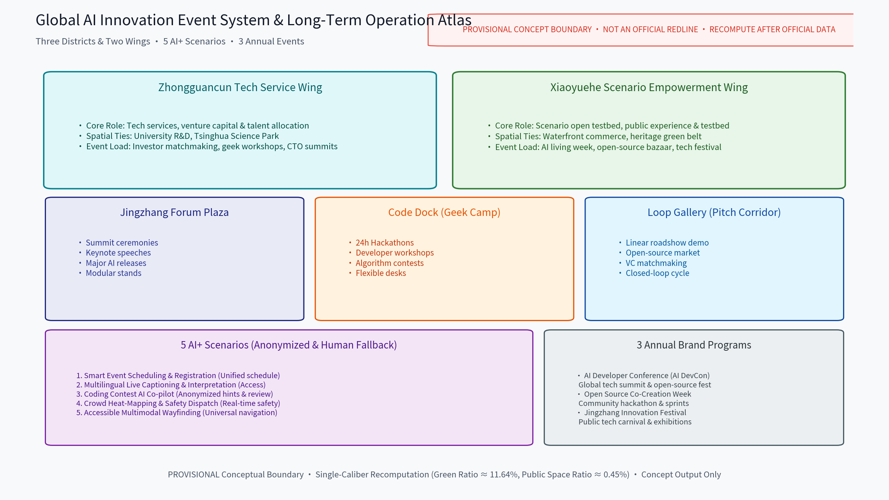

Site Overview
Overall spatial framework along the heritage green belt creating a continuous event carrier.

Three-Level Scope
Strictly structured into Coordinated Research (~43.6 km²), Overall Design (~11.41 km² / 11,412,825 sqm), and Key Areas (368.4 ha).
Key Areas
Detailed design covering Jingzhang Forum Plaza (North), Code Dock (Central), and Loop Gallery (South).

Land-Use Structure
Single-caliber distribution strictly summing to 100.0%: Parks & Green (28.23%), R&D (27.39%), Business/Finance (16.03%), Commercial (13.86%), Cultural (13.54%), Residential (0.95%) across 27 zones.

Mobility & Slow-Traffic
Slow-traffic-first principle with ~10.15 km continuous greenway spine, transit hubs and event shuttle networks.

Blue-Green & Public Space
Green ratio green_ratio ≈ 11.64% (1,328,450 sqm) and public space ratio public_space_ratio ≈ 0.45% (51,350 sqm).
Architecture & Renovation
Retain/renovate/demolish balance: Preserves heritage structures, renews industrial workshops, and permits selective micro-demolition.
Renewal Projects
Phased into near-term (1-3 yrs), mid-term (3-5 yrs), and long-term (5-10 yrs) implementations.
AI Scenarios
5 AI+ scenarios under anonymized aggregation and human-in-the-loop fallback without over-surveillance.

Core Metrics

Task Coverage
Full coverage of all 23 required items across tasks 1.3-1.5 and agent.1-6.
Self-Check Status
Passed all four validation gates in self_check_submission.py.
Sources
Recorded in sources.json with complete traceability.
Assumptions
6 declared assumptions in assumptions.json subject to recomputation upon official data release.